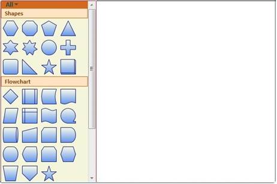

Essential Diagram Silverlight can be used to create a rich Visio-like application. This framework provides many utility controls to help you easily put an application together. End users can get started in minutes using this diagram control.
The following is a basic step to create DiagramControl and initializing the necessary properties. Details about individual parts are explained later in this documentation.
Creating DiagramControl
The Diagram Control can be added to the application using the following code:
DiagramControl can be created in two ways namely:
· Through XAML
· Through Code Behind
|
[XAML]
<UserControl x:Class="SilverlightApplication1.MainPage" xmlns="http://schemas.microsoft.com/winfx/2006/xaml/presentation" xmlns:x="http://schemas.microsoft.com/winfx/2006/xaml" Height="400" Width="600" xmlns:sfdiagram="clr-namespace:Syncfusion.Windows.Diagram;assembly=Syncfusion.Diagram.Silverlight" xmlns:local="clr-namespace:SilverlightApplication1"> <Grid Name="diagramgrid"> <sfdiagram:DiagramControl></sfdiagram:DiagramControl> </Grid> </UserControl> |
|
[C#]
DiagramControl dc = new DiagramControl(); |
|
[VB]
Dim dc As New DiagramControl() |
This shows a window with empty diagramcontrol.
1. Enabling Symbol Palette
Now we need to add the Symbol Palette to our newly created
Diagram control. The Symbol Palette is displayed by setting the
IsSymbolPaletteEnabled property to true. By default, it is set to
false. The following code enables the Symbol Palette.
SymbolPalette can be enabled in two ways namely:
· Through XAML
· Through Code Behind
|
[XAML]
<UserControl x:Class="SilverlightApplication1.MainPage" xmlns="http://schemas.microsoft.com/winfx/2006/xaml/presentation" xmlns:x="http://schemas.microsoft.com/winfx/2006/xaml" Height="400" Width="600" xmlns:sfdiagram="clr-namespace:Syncfusion.Windows.Diagram;assembly=Syncfusion.Diagram.Silverlight" xmlns:local="clr-namespace:SilverlightApplication1"> <Grid Name="diagramgrid"> <sfdiagram:DiagramControl IsSymbolPaletteEnabled="True"> </sfdiagram:DiagramControl> </Grid> </UserControl> |
|
[C#]
DiagramControl diagramcontrol = new DiagramControl(); diagramcontrol.IsSymbolPaletteEnabled = true; |
|
[VB]
Dim diagramcontrol As New DiagramControl() diagramcontrol.IsSymbolPaletteEnabled = True |
2. Creating
DiagramModel
To add contents into the drawing area, use the Model property of the diagram control. The following code can be used to add the model.
DiagramModel can be created and assigned to DiagramControl’s View Property using two ways:
· Through XAML
· Through Code
Behind
|
[XAML]
<UserControl x:Class="SilverlightApplication1.MainPage" xmlns="http://schemas.microsoft.com/winfx/2006/xaml/presentation" xmlns:x="http://schemas.microsoft.com/winfx/2006/xaml" Height="400" Width="600" xmlns:sfdiagram="clr-namespace:Syncfusion.Windows.Diagram;assembly=Syncfusion.Diagram.Silverlight" xmlns:local="clr-namespace:SilverlightApplication1"> <Grid Name="diagramgrid"> <sfdiagram:DiagramControl IsSymbolPaletteEnabled="True"> <sfdiagram:DiagramControl.Model> <sfdiagram:DiagramModel></sfdiagram:DiagramModel> </sfdiagram:DiagramControl.Model> </sfdiagram:DiagramControl> </Grid> </UserControl> |
|
[C#]
DiagramControl dc = new DiagramControl(); dc.IsSymbolPaletteEnabled = true; DiagramModel model = new DiagramModel(); dc.Model = model; diagramgrid.Children.Add(dc); |
|
[VB]
Dim dc As New DiagramControl() dc.IsSymbolPaletteEnabled = True Dim model As New DiagramModel() dc.Model = model diagramgrid.Children.Add(dc) |
3. Creating DiagramView
To display the drawing area, use the View property of the diagram control. The following code can be used to add the view.
DiagramView can be Created and assigned to DiagramControl’s View Property using two ways
· Through XAML
· Through Code Behind
|
[XAML]
<UserControl x:Class="SilverlightApplication1.MainPage" xmlns="http://schemas.microsoft.com/winfx/2006/xaml/presentation" xmlns:x="http://schemas.microsoft.com/winfx/2006/xaml" Height="400" Width="600" xmlns:sfdiagram="clr-namespace:Syncfusion.Windows.Diagram;assembly=Syncfusion.Diagram.Silverlight" xmlns:local="clr-namespace:SilverlightApplication1"> <Grid Name="diagramgrid"> <sfdiagram:DiagramControl IsSymbolPaletteEnabled="True"> <sfdiagram:DiagramControl.Model> <sfdiagram:DiagramModel></sfdiagram:DiagramModel> </sfdiagram:DiagramControl.Model>
<sfdiagram:DiagramControl.View> <sfdiagram:DiagramView ></sfdiagram:DiagramView> </sfdiagram:DiagramControl.View> </sfdiagram:DiagramControl> </Grid> </UserControl> |
|
[C#]
DiagramControl dc = new DiagramControl(); dc.IsSymbolPaletteEnabled = true; DiagramView view = new DiagramView(); view.Bounds = new System.Drawing.Thickness(0, 0, 1000, 1000); dc.View = view; diagramgrid.Children.Add(dc); |
|
[VB]
DiagramControl dc = new DiagramControl(); dc.IsSymbolPaletteEnabled = true; DiagramView view = new DiagramView(); view.Bounds = new System.Drawing.Thickness(0, 0, 1000, 1000); dc.View = view; diagramgrid.Children.Add(dc); |
This creates a Diagram Control with the Symbol Palette and the drawing area as illustrated in the following image.

 Creating Diagram control through
Designer
Creating Diagram control through
Designer